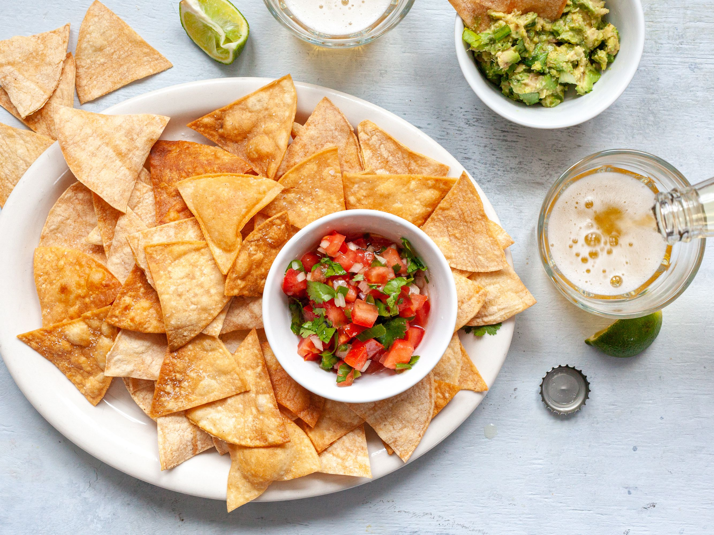

Tortilla Chips
Back to index

Description
Used next to most mexican cuisine, tortilla chips are a common appetizer for many dishes.
They can be dipped in anything and still benefit from the flavor. They are cheap,
easy to make, and enjoyable at any time, next to everything.
Ingredients
- Corn Tortillas
- Vegetable Oil
- Queso Fresco
- Sour Cream
Steps
- Cut corn tortillas into four even slices.
- Fill pot or pan with vegetable oil.
- Fry tortilla slices until crispy.
- Once finished, shred queso fresco on top of the chips, to your liking.
- Dip in sour cream and enjoy.